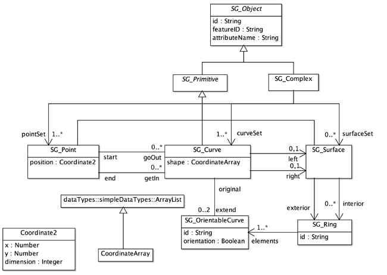
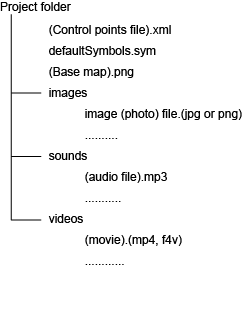
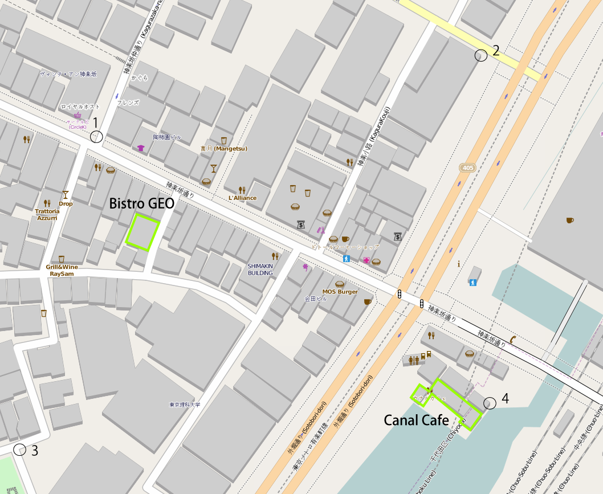
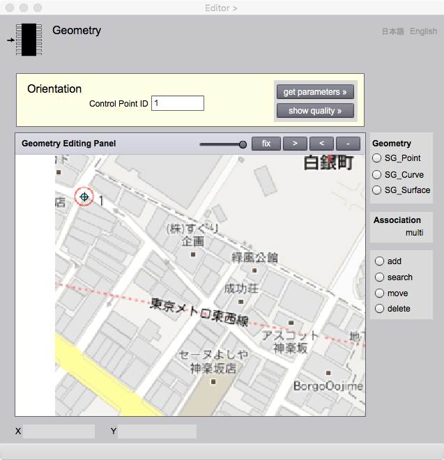
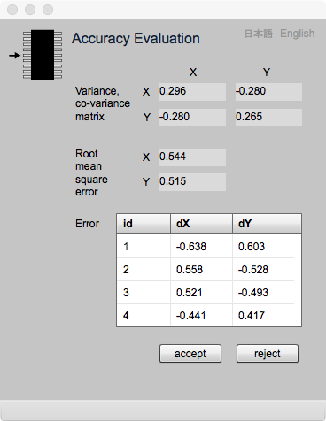
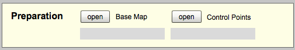
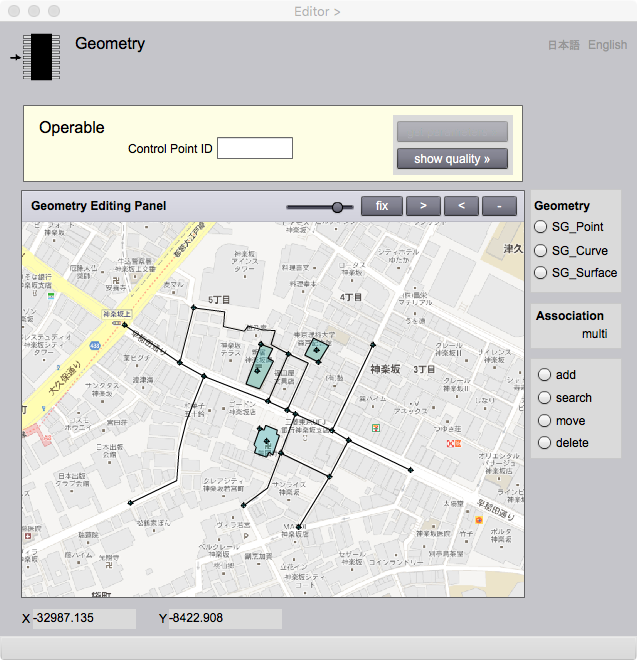

Geometry
This page enables acquisition of geometric attributes and association data between different features under the cooperation with Editor page. What is geometric attribute, how to use Geometry and Association page will be explained here. Please refer Editor page because,association between features are mainly explained in Editor page.
Geometric attributes
Geometric attributes describe spatial characteristics of features. Many of features abstracted from things on Earth have geometric characteristics such as point, curve and surface. For example, trees can be represented by points. Seashore and boundary of vegetation area can be represented by curves. And inside of such boundaries are extents of features called surface.
There are two types of dimensions. One is geometric dimension. The other is topological dimension. Coordinates consisting in geometries consists of one, two or three coordinate elements. Such a number is geometric dimension. While, curves possible to map onto a straight line is one dimansional topologically. Surface that is possible to map onto a plane is two dimansional. Such dimensions are topological dimensions. Features created in gittok may have up to two dimensional geometries and their complex. Geometric primitive (point , curve or surface) is an open simplex. "Open" means that each geometric primitive does not contain its boundary. Each primitive associates with other primitives as boundary or co-boundary. Point is a boundary of curves. Curve is a boundary of surfaces. Surface is a co-boundary of curves. Curve is a co-boundary of points. Geometric primitives and their associations are defined as gittok spatial schema referring ISO 19107 - Spatial schema.
Spatial schema
Spatial schema consists of geometric primitive, geometric complex and auxiliary geometric objects. Figure 1 shows the overview of the gittok spatial schema.

Figure 1. Gittok spatial schema
SG_Object
SG_Object s an abstract root class of spatial geometry (SG_) primitive and complex. SG_Object comprises attributes inherited by children class.
Attributes
id
identification code. It is given automatically by gittok.
featureID
Identification code of a feature instance that is an owner of the geometry.
attributeName
Attribute name of the geometry included in the feature instance. geometric attribute can associate with owner instance by the feature ID and the attribute name.
SG_Primitive
SG_Primitive is an abstract class as the parent of geometric primitives. There is no attribute in this class.
SG_Point
Zero dimensional primitive with a position as an attribute.
Attributes
position
Two dimensional coordinate (Coodinate2) representing a position of a feature.
Association
goOut
Point may be isolated but it may be a boundary of curves. If curves go out from this point, ids are stored in the array of goOut to represent associations.
getIn
Point may be isolated but it may be a boundary of curves. If curves get in to this point, ids are stored in the array of getIn to represent associations.
SG_Curve
SG_Curve is a coordinate sequence associating to start and end point. Gittok now cannot represent contiguous curve. This is a future issue of gittok. Self-intersection is not allowed as it is one-dimensional geometry.
Attributes
shape
A coordinate sequence to show a shape of the curve. Start and end point are not included in the sequence as they are boundaries of the curve.
Associations
start
A start point of the curve.
end
An end point of the curve.
extend
Associations to orientable curves. Originally a curve has a direction from start to end. However a curve may be used as a curve with opposite direction if it is used as a boundary of surfaces. SG_OrientableCurve having orientation is a child class of SG_Curve. And a curve may associate with up to two orientable curves as "extend".
SG_OrientableCurve
A curve with orientation attribute to show the original direction is positive or negative. It is used to represent a boundary of surfaces. The left side of the boundary is inside of the surface. In gittok, an orientation is positive if the left side of the original curve is inside.
Attributes
orientation
If the original curve is positive then a value of the orientation is true.
Associations
original
A role name of original curve.
SG_Surface
Surface is an area inside of the boundary that is a sequence of orientable curves, in other words a ring. There are two types of boundaries. One is exterior, while the other is interior. Interior boundaries may be more than one.
Associations
exterior
A role name of an outer boundary of a surface. It is a ring as a sequence of orientable curves.
interior
A role name of a set of inner boundaries of a surface.
SG_Ring
A closed sequence of orientable curves. A ring is counter clockwise if a coordinate system is right-handed. In case of a screen of PC, right side is inside of a surface, because PCs usually use the left-handed system.
Attributes
element
a sequence of orientable curves.
Coordinate2
Coordinate is a combination of lengths from origin point (coordinate elements) measured along axes defined by the coordinate system. In case of gittok, a number of coordinate elements is two as it is defined in the two dimensional space. If coordinate system is geodetic, coordinate elements are longitude and latitude. If coordinate system is plane rectangular, coordinate system is x (north direction, positive) and y (east direction is positive).
Attributes
x
length from origin measured along x-axis.
y
length from origin measured along y-axis.
dimension
a number of dimension. In case of gittok, dimension is two.
Geometry editing
Geometry and association page enables acquisition and editing of geometric attributes and association between different features. Geometry becomes spacial attribute by connection to a feature instance at Editor page. A procedures for acquisition and editing of geometric attributes and association between different features will be explained at this section.
Preparation of geometric data acquisition
Geometric data are acquired by map digitizing in gittok. A map used for acquisition is called a base map. Its map projection should be plane rectangular or UTM.
First of all, a folder in PC should be prepared. A structure of the folder is as follows. The name of the folder can be decided by yourself.

Figure 2. Structure of project folder.
Control file is an XML document storing ground coordinate array for the conversion between ground and map coordinates applying Affine transformation.An example of control file is shown under.
<IdentifiedCoordinateArray element="1,-32852.246,-8748.471,2,-32852.055,-8188.527,3,-33237.924,-8737.200,4,-33241.755,-8269.957" dimension="2"/>
A number of elements should be more than or equal to four, because six conversion parameters will be acquired by the least square method.
Identified coordinate means coordinate with id. Element is a sequence of (id, x, y). dimension shall be 2 in gittok. X is a vertical coordinate and y is a horizontal coordinate in case of Japanese plane rectangular coordinate system.
DdefaultSymbols.sym is a symbol style dictionary for use to display geometry on the base map. Symbol style dictionary will be explained at the text of Cartographer page.
Base map is a map describing information for data acquisition such as control points, geometries and texts. Its format is .png or .jpg. More than three control points for coordinate conversion shall be indicated in the base map. Figure 3 is a simple example of the base map.

Figure 3. Simple example of base map
The procedure of preparation is as follows.
1. Geometry page appears by clicking a row of geometric attribute in Attribute Type List on Editor page.
2. The base map appears by clicking "open base map" button and by selecting the file.
3. XML file of control points is called by clicking "open control points" button and by selecting the file.

Figure 4. Geometry page when the preparation is finished.
Base map orientation
Orientation in this case means to get conversion parameters between map coordinates and ground coordinates, and to get variance co-variance matrix for the evaluation of positional accuracy. Plane rectangular coordinates of control points can be obtained by using the web-site for coordinate conversion for example in Japan.
The procedure of base map orientation is as follows.
1. Key-in an id of the control point at the field of control point id.
2. Move the target control point on the map to the center of the panel by using buttons and slider put at the title bar on the panel. The functions of buttons and slider are as follows.
fix / pan: Translation of the map is possible by clicking "fix" button ("fixf" is replaced by "pan"). translation is possible during the button is "pan", but position digitizing is impossible.
>: Map scale is smaller by clicking this button.
<: Map scale is larger by clicking this button.
-: Initialize the map scale by clicking this button.
slider: Transparency of the base map changes by dragging slider button.
3. Digitizing of the position of the control point on the map is done by clicking button of pointing device at the target control point.
4.Then repeat 1 to 3 until all control points are digitized.
5. Positioning quality can be evaluated by Accuracy Evaluation page appeared by clicking "get parameters" button. If quality is enough, then click "accept" button, else click "reject" button. Accuracy Evaluation page is explained in detail at the text of this page.
6. Accuracy can be confirmed any time by clicking "show quality" button.

Figure 5. Page for Accuracy Evaliation
Geometry digitizing
Geometry Editing Panel enables the digitizing of geometry. The procedure is as follows.
1. Select the class of geometry (SG_Point, SG_Curve or SG_Surface) by clicking the radio button at the right side of the page.
2. Select "add" by clicking radio button under the geometry selection box. However, If you digitize a curve, you need points as boundaries of the curve before. If you digitize a surface, you need curves as boundaries os the surface before.
3. In case of the digitizing of a point, click the pointing device at the position of a point.
4. In case of the digitizing of a curve, click the start point at first, click vertices on the curve sequentially, and finally click the end point. If you put the cursor on the start and end points, the shape of the cursor changes to cross (+) mark. Confirm the shape before clicking on the start and end points.
5. In case of the digitizing of a surface, confirm the boundary (external, and a set of internals it is required) is prepared, then click the cursor at inside of the boundary. If boundary is not perfect, the alert "could not find surface" appears.
Geometry search
The procedure of the geometry search is as follows.
1. Click "search" radio button after the selection of a geometry class.
2. Click cursor on or near the target geometry.
3. The red circle appears if the geometry is found.
Geometry deformation and shifting
In case of a point
1. Search the point. The red circle appears if the search was succeeded.
2. Click "move" radio button.
3. Click cursor at the new position.
In case of an intermediate point of a curve
1. Search the vertex of a curve by clicking the cursor.
2. Click "move" radio button.
3. Click cursor at the new position.
The shape of surfaces that includes shifted point or curve deform as they move.
Geometry elimination
Geometry can be eliminated if it is not a boundary of other geometry and if it is not an attribute of a feature instance. The procedure of elimination is as follows.
1. Search the target geometry.
2. click "delete" button.
Connection between geometry and feature instance
Geometry may be an attribute of a feature instance. A feature becomes an owner of geometry by holding the id of geometry. A geometry becomes an attribute of a feature by holding an id and attribute name of the feature. Geometry may not be an attribute of feature. For example, a sequence of curves may be an attribute of a road. However, edge points of curves may not be an attribute. Rings and orientable curves can not be attributes of features, because they are parts of surfaces.
The procedure to define points, curves and surfaces as attributes of features is as follows.
1.Search the geometry which will be an attribute. If it is already an attribute of a feature, the id of the feature appears in Instance ID drop down list on Editor page. Such a geometry cannot be an attribute of another feature.
2. Create new feature instance by clicking "add" button on Editor page.
3. Select the row of the attribute listed in AttributeType List.
4. Click "add" button at the right lower of Editor page. The id of geometry appears after "add" button is clicked.
5. Confirm an appropriate geometry is selected by clicking the id in Attribute ID Value List. Red circle appears on the selected geometry.
Geometry attribute elimination
The procedure to eliminate geometric attribute from a feature instance is as follows.
1. Click the row of id which should be eliminated on Attribute ID Value List.
2. Click "delete" button.
Geometry
There are two main GUI in Geometry page. One is a box for orientation that consists of "Preparation box" and "Orientation box". Preparation box is used to call a base map image and a control point file. Orientation box is used to get unknown parameters for the conversion between map and ground coordinates. Another main GUI is Geometry Editing Panel. It is used to digitize and edit geometries.
PREPARATION BOX

Figure 6. Orientation box for preparation of geometry acquisition and eiditing
Fields
Base Map
File name of the base map is shown in this field by opening the file using "open" button.
Control Points
File name of control points XML document is shown in this field by opening the file using "open" button.
Buttons
open (Base Map)
A button for opening the base map file.
open (Control Points)
a Button for opening the control point XML document file.
ORIENTATION BOX
Figure 7. Orientation box for matching control points on map and ground
Fields
Control Point ID
Id of the control point is keyed-in in this field.
Buttons
get parameters
Accuracy evaluation page appears by clicking this button.
show quality
Accuracy evaluation page appears any time to confirm positional accuracy.
GEOMETRY EDITING PANEL

Figure 8. Panel for acquisition and editing geometries
Fields
X
X coordinate on the ground is shown in this field.
Y
Y coordinate on the ground is shown in this field.
Association
Feature selected through geometry is whether "from" or "to" and multiplicity is declared or not.
The procedure how to input association between different feature is explained in detail at the text in Editor page.
Buttons
SG_Point, SG_Curve, SG_Surface
Radio buttons for the selection of geometry.
add
New geometry can add by clicking this button.
search
Geometry can be found after this button is clicked.
move
Position of a point or an intermediate coordinate will be able to shift by clicking this button.
delete
Searched geometry can be deleted by clicking this button, if it is not an attribute of a feature and it has no association between other geometries.
fix / pan
Translation of the map is possible by clicking "fix" button ("fix" is replaced by "pan"). Translation is possible during the button is "pan", but position digitizing is impossible.
>
Map scale is smaller by clicking this button.
<
Map scale is larger by clicking this button.
-
Initialize the map scale by clicking this button.
slider
Transparency of the base map changes by dragging slider button.
日本語
今あなたが読んでいるドキュメントが表示されます．
English
You can read the tutorial written in English.